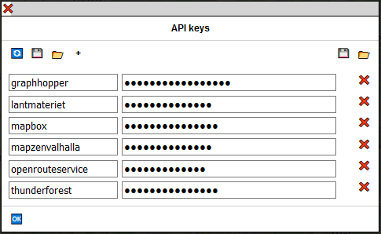
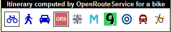
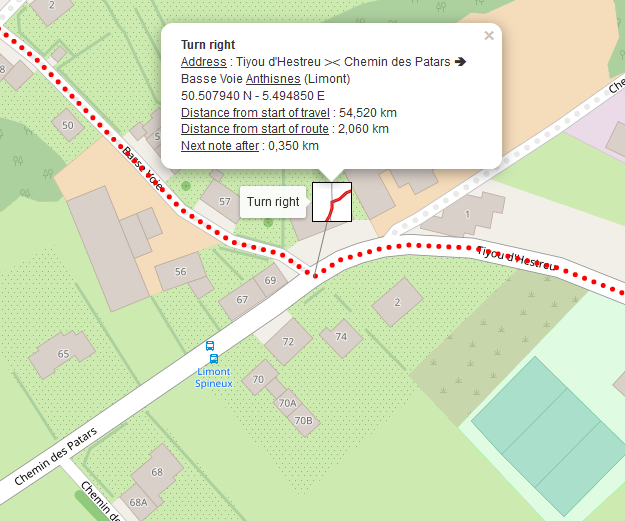
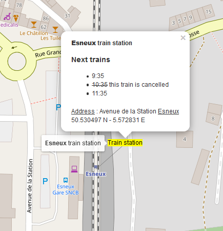

icon at the bottom of the interface and "Directions as the crow flies" as the transit mode by clicking on the icon
icon at the bottom of the interface and "Directions as the crow flies" as the transit mode by clicking on the icon  .
.I go from time to time on a bike travel for several weeks, sometimes in isolated areas. This kind of travel can not be improvised, even if there is always a part of unforeseen. I needed a tool to prepare my route from the map and to add notes.
Yes, I know, there are a lot of applications that can make a route from one point to another, but none really gives me satisfaction: I do not often look for the shortest route - sometimes it's even a circular route - and in general we're limited to a few hundred kilometers.
Finally, it is also important to be able to record what has been prepared because it is not done in a few minutes. You must also be able to print the result. In some isolated areas, there is not always a mobile network or the possibility of recharging a battery. A good old hard copy is often valuable.
A route connects two points. On the map, it is represented by a polyline.
An itinerary is the description of the various changes of direction needed to follow a route. A change of direction is a maneuver.
A travel consists of one or more routes. They do not have to touch each other at their ends. There may also be more than two routes starting from the same point.
In a travel, some routes may be chained between them. In this case, the different chained routes will be considered as only one for the calculation of the distances. One and only one chain maybe created by travel, but it is not mandatory that all routes are included in the chain.
A note is a set of information that relates to a specific point on the map or on a route. A note consists of an icon, a tooltip, a free text, an address, a link and a phone number. None of this information is required, except for the icon, which is used to represent the note on the map. This icon can be an image, a photo, a text ...
The roadbook is an HTML page that contains all the information of the travel: the notes, the routes and the itineraries.
If you use Travel & Notes only to create notes, you can skip all the part about the access keys. These are only used for calculating routes and the display of certain maps.
Travel & Notes does not calculate routes and itineraries. It connects to a route provider to get this itinerary. The different route providers that can currently be used are GraphHopper, Mapbox, Stadia Maps, OpenRouteService and OSRM. It is also possible to draw a polyline between two places, without following paths. A train route between two stations can also be added, provided that this route is encoded in OpenStreetMap, respecting the rules of public transport version 2.
For GraphHopper, OpenRouteService, Stadia Maps and Mapbox it is necessary to have an access key (API Key) to connect to the server. Check the websites of these different providers to obtain an access key.
You must also correctly read the conditions of use of the access keys and check that what you do with Travel & Notes corresponds to these conditions of use.
For the display of certain maps (Thunderforest, Lantmäteriet - Sweden, Mapbox), an access key is also essential. For other maps, this is not necessary (OpenStreetMap, aerial view ESRI, IGN - Belgium, Kartverket - Norway, Maanmittauslaitos - Finland).
You are also responsible for the use of your access keys. Remember that there may be billing that is done based on these access keys. Do not give them to anyone or do not let them hang around anywhere.
Access keys are managed from the access keys dialog. To view it, click the üîë button in the toolbar at the top of the interface.
For each service provider, you must indicate on the left the name of this service provider and on the right the access key. The different names currently possible are 'GraphHopper', 'Lantmateriet', 'Mapbox', 'MapzenValhalla', 'OpenRouteService' et 'Thunderforest' (insensitive to upper / lower case).
Use the + button to add a service provider and the ❌ button on the right to delete this one.
When your access keys are entered, press the button üÜó to finish. Your keys are saved in the "sessionStorage" of the browser and available until the tab is closed.
It is possible to save the access keys in a file, protected by a password or unprotected.
Attention: the page must be served in HTTPS to save in a file protected by a password.
The üîÑ button is used to reload the access keys file from the web server, if a file was previously found on the server.
The button üíæ on the left of the dialog box allows you to save the access keys in a password protected file. This must contain at least 12 characters including at least one uppercase, one lowercase, one number, and one other character.
The button üìÇ on the left of the dialog box replaces all the access keys of the dialog box with the contents of a password protected file.
These two buttons are only present if all the conditions to be able to save / restore the keys with a password are met.
The button üíæ on the right of the dialog box allows you to save the access keys in a file not protected by password.
The button üìÇ on the right of the dialog box replaces all the access keys of the dialog box by the contents of a file not protected by password.
These two buttons are only present if they have been enabled in the TravelNotesConfig.json file.
If a password protected file named APIKeys is placed in the same directory as Travel & Notes on the server, Travel & Notes will ask you for the password when you open it in order to use the keys contained in this file.
For geeks and paranos also see in the installation guide and in the file TravelNotesConfig.json:
All map objects (waypoints, notes, routes, map) have a context menu. All the commands related to these objects can be found in these context menus.
The route context menu can also be displayed by right-clicking (with a mouse) or a long click (on touch screen) on a route in the "Travel properties" window.
The travel notes context menu can also be displayed by right-clicking (with a mouse) or a long click (on touch screen) on a note in the "Travel notes" window.
When the map is displayed, only a small black rectangle is visible in the upper right corner of the map:

Move the mouse over this rectangle or click on it ( on a touch screen) to see the complete toolbar.
Similarly, in the upper left corner is a toolbar that allows you to choose from several basemaps. Only maps that do not require an access key or those for which you have entered an access key are visible.
At the bottom of the screen is another toolbar.
The different route modes (bicycle, pedestrian, car, train or line) as well as the different route providers are selected on this toolbar.
The blue buttons on the left allow you to select the route mode, the other buttons select the route providers.
Only the buttons that can be used are visible in the toolbar:
This window is displayed by clicking on the üõÑ button in the main toolbar.
At the top of the window you can name your travel. This is essential if you want to save your travel in a file.
Below is the list of the different routes of the travel.
A ⛓ icon is displayed before the name of the linked routes.
A üî¥ icon is displayed before the edited route name.
A right click (with a mouse) or a long click (with a touch screen) on a route will display the contextual menu of this route.
If the window is too small to display all routes, use the mouse wheel to scroll through the list. On a touch screen simply drag it.
You can rearrange the list by dragging and dropping with the mouse. On a touch screen, you must double-click on the route to be moved followed by a drag.
If you drop the route to be moved at the bottom of another route, the route to be moved will be inserted after and if you drop it at the top, it will be inserted before.
This window is displayed by clicking on the üó®Ô∏è button in the main toolbar.
As for the route of the travel in the window "Travel Properties", it is possible to display a contextual menu and to modify the order of the notes.
In this window, it is possible to search for points of interest (POI) in OpenStreetMap. A toolbar is displayed at the top and then a tree list allowing you to choose the POI to search is displayed.
La liste arborescente peut être facilement modifiée et adaptée à vos besoins. Voir le guide d'installation.
Select the type of POI to search from the tree list and then click on the üîé button. After a few moments, the results are displayed:
Move the mouse over one of the results. This will be displayed on the map, as well as a tooltip with all the tags introduced in OpenStreetMap.
Right clicking on one of the results will show a context menu allowing you to create notes with that result or choose this result as the waypoint for the route being edited.
The search area is limited to the map displayed on the screen with a maximum of 10 km by 10 km.
When the "Search OpenStreetMap" window is activated, a red square showing the limits of the next search is displayed on the screen. The green square shows the limits of the previous search.
Sometimes, an edit box can hide an object of the map that you want to consult. It is always possible, either to move / modify the map with a zoom or a pan, or to drag / drop the edit box with the bar at the top.
To add, modify or delete waypoints, it is necessary to edit the route from the interface or via the contextual menu of the route if it already exists.
All other modifications (notes, properties of the route) can be made, whether the route is edited or not.
To create a waypoint, right-click on the map at the desired location and choose "Select this point as start point", "Select this point as waypoint", "Select this point as end point" or "Select this point as start point and end point" in the menu:
A green icon (for the start point), orange (for a waypoint) or red (for the end point) is added to the map at the chosen location.
An intermediate waypoint added via the context menu will always be added at the end of the list of intermediate waypoints.
Move the mouse over the route or click on the route at the desired location (touchscreen) to see a temporary gray waypoint appear.Then by dragging and dropping it, the waypoint is added to the path.

Drag and drop the waypoint on the map to change a waypoint
Right click on the waypoint and choose "delete this waypoint" from the menu. It is not possible to delete the start point or the end point. Only a drag and drop is possible.
When a waypoint is created, its address is searched with Nominatim. If a name, such as a store or building name is found by Nominatim, this will also be added (see wayPoint.geocodingIncludeName in the TravelNotesConfig.json file to disable this possibility).
You can change this name and address by right-clicking on the waypoint and selecting "Modify the properties of this waypoint" from the context menu.
Note, however, that each time the waypoint is moved, the name and address will be modified by Nominatim and your lost modifications. So it is better to make these changes when you are certain not to move this waypoint any more.
Use the buttons at the bottom of the control to change the route mode (bike, pedestrian, car or train) as well as the route provider.
When the starting point and end point are known, the route is calculated and displayed on the map. It's the same every time an intermediate point is added or a waypoint is moved.
The description of the route is also displayed in the "Itinerary and notes" section.
When editing a route is finished, it must be saved. Right click on the route and select 'Save the modifications on this route' from the ontext menu.
It is also possible to quit editing a route and return to the situation before changes with the command 'Cancel the modifications on this route'. Attention, all changes will be lost, including changed properties and added notes since the start of the edition.
When a route is calculated with GraphHopper or OpenRouteService, it is possible to display a profile of this route. Right-click on the route and select "View the profile" from the context menu.
There may be multiple open windows displaying profiles.
It is possible to move a profile on the screen by dragging and dropping with the top bar of the window.

and select the train corresponding to the desired route and finish by clicking on the button üÜó.
 icon at the bottom of the interface and "Directions as the crow flies" as the transit mode by clicking on the icon .
icon at the bottom of the interface and "Directions as the crow flies" as the transit mode by clicking on the icon .Note that, depending on the points chosen, the result on the map can be a line, an arc of a circle or a part of a sinusoid, but in all cases it will be the representation of a portion of a large circle on the terrestrial globe ( = the shortest path between the two points).
at the bottom of the interface and "Circle" as transit mode by clicking on the icon Here too, the result can be an ellipse, a rectangle or a sinusoid but in all cases it will be the representation of a circle on the earth globe.
Right click on the route and select "Modify the properties of this route" from the context menu.
You can first change the name of the route and replace the name suggested by the program with a name of your choice.
Note that when the name has been changed, the addresses will no longer be added to the name,even if you change the start and end points.
It is also possible to change the width of the route as well as the type of line and also chaining the route.
Finally you can change the color used to display the route. Select a color from the 6 rows of colored buttons. The slider under the colored buttons adds more or less shade of red in the colors offered.
Each shade of red, green and blue for the desired color can also be set individually via the 3 color editing areas.
Please note: this command is experimental. It may not work with your Travel & Notes installation if you have added other elements to the page. Moreover, browsers do not all react in the same way to css tags, especially those that force a page break when printed. If this command does not suit you, you can disable it from the TravelNotesConfig.json file (printRouteMap.isEnabled). See the installation guide.
Right-click on the route for which you want to print the maps and select "Print the maps for this route" from the context menu.
The edit box is displayed:
"Paper width" et "Paper height": this is the width and height of the printable area of the paper. You must check this with your printer.
"Border width": it is an area around the map and inside it which will be reprinted in the following map.
"Zoom" : the zoom to use for maps. It is independent of the zoom used to display the map before launching the command. For reasons of performance of the tile servers, it is not possible to use a zoom larger than 15.
"Print notes" when this box is checked, the notes icon is printed on the map.
Finally, select the browser you are using (either Firefox or another Chrome-based browser). This choice is important: the map can be badly cut at the bottom of the page in the case of a bad choice.
When the edit box is closed with the "ok" button, the map and controls are replaced by views of the map that have the desired dimensions and two buttons are present at the top left:

The button üñ®Ô∏è will launch the print command from your browser and the button ❌ will cancel printing and redisplay the map.
When the print command of the browser is closed, the print views will also be closed and the map redisplayed.
All the default values of the edit box can be modified in the TravelNotesConfig.json file. See the installation guide.
Avoid overloading the tile servers. Issue this command only if you really need it. Decreasing the paper size, the margin size and the zoom will also decrease the number of tiles required.
When the edit box is closed, the program calculates the number of tiles required. If this number is too large, the command is stopped.
@page {
size: A4 landscape;
margin: 7mm;
}
Check that everything is correct with the "Print preview" command.
There are two kinds of notes: travel notes and route notes. The position of the travel notes is completely free and they will all be displayed at the beginning of the roadbook. Route notes are always positioned on a route and displayed with the route in the roadbook.
Right-click at the desired point on the map and select "Add a travel note" from the context menu.
The order of travel notes can be changed by dragging and dropping in the window of travel notes.
Right-click at the desired location on the route and select "Add a note on the route" in the context menu.
Left click on the note icon.
Right-click on the note icon and select "Edit this note" from the context menu.
Right-click on the note icon and select "Delete this note" from the context menu.
Drag and drop the note. A line will be drawn between the icon of the note and the point chosen for the insertion of the note. The latitude and longitude of the note are not modified.
Move the note icon to make the line visible. Move the mouse near the end of the line. When a small black square appears on it, drag and drop this square and the line.
A route note always has its latitude and longitude on the route. When the line is dropped, the nearest point on the route is searched and the free end of the line moved to this point.
Right-click on the note icon and select "Transform to travel note" from the context menu. The transformation is only possible if no route is being edited.
Right-click on the note icon and select "Transform to route note" from the context menu. The transformation is only possible if no route is being edited. The note will be attached to the route closest to it.
Right-click on the route and select "Create a note for each route maneuver" from the context menu. A confirmation request is displayed. For each route maneuver, a SVG note from the OpenStreetMap data will be created.
At the top of the box, a drop-down list allows you to choose predefined notes. It is possible to modify this list. See the installation guide.
The ▼ button hides or displays certain editing areas which are hidden by default (the two controls allow you to modify the dimensions of the icon and the telephone number). It is possible to choose which areas are hidden by default. Consult the installation guide;
The üìÇ button allows you to upload your own file with notes predefined in Travel & Notes. See the [installation guide] (InstallationGuideEN.html#TravelNotesNoteDialogJson) for how to create this file.
All the other buttons are modifiable and allow you to insert html tags or predefined text in the edit zones. Consult the installation guide;
The "Icon Content" area will be used to represent the note on the map and can not be empty (leaving this area blank would prevent any subsequent changes to the note).
The "Address" zone is automatically completed when creating the note - Nominatim is used for the street name and OverpassAPI for the municipality name. This area will never be changed by Nominatim afterwards, even if the note has been moved. The button üîÑ allows, however, to request a new geolocation to Nominatim/OverpassAPI.
If the phone edit box contains only a valid phone number (= starting with a + and then only digits or the characters #, * or space), the phone number will be displayed with a tel: link and a sms: link.
Each edit zone can contain plain text or html, with the exception of the "Link" zone which can only contain a valid link.
Only the following html tags and attributes can be used:
Also, the following svg tags can be used:
For all tags, id, class, dir and title attributes can also be used.
The rules for editing html are of course applicable:
The urls introduced in the href and src attributes, as well as in the "link" edit zone must be valid urls:
As more text is inserted into an edit box, the app interprets the text and adapts the note preview accordingly. When the edit box is closed with the üÜó button, the text you entered is replaced by the one produced by the interpretation that the app made of it.
When creating a route note, you can choose "SVG icon from OSM" in the list of predefined notes. In this case, Travel & Notes will search OpenStreetMap the nearest intersection located on the route and will create an SVG icon showing the streets near this intersection.
The intersection will be placed in the center of the icon and its content will be oriented according to the path followed: the route by which one arrives at the intersection will be turned towards the bottom of the icon.
The address will also be modified: all the street names found at the intersection will be indicated, separated by a symbol ⪥. The first street name will always be the one by which we arrive at the intersection and the last name the one by which one leaves the intersection. This name will be preceded by an arrow indicating the direction to follow. The name of the town / city will also be added. If a hamlet or village name is found near the intersection, it will also be added in parentheses.
The dialog box:

And the result on TravelNotes:

The path goes from right to left. The intersection of Tiyou d'Hestreu, Chemin des Patars and Basse Voie streets is at the center of the icon. The streets are oriented so that a person who follows the path on the ground sees the streets in the same position as on the icon. The street we arrive at is Tiyou d'Hestreu. An arrow to the right indicates that you must turn right in the Basse Voie. We are in the city of Anthisnes and the hamlet of Limont.
The dialog box:
And the result on TravelNotes:
The dialog box:
And the result on TravelNotes:

When a .GPX file is opened or imported, the following rules are applied:
Click on the button üìô. A new tab is created with the roadbook. This contains all the routes as well as all the notes that have been created on the map. It is possible to choose what you want to see in the roadbook via the menu at the top of the page:

It is possible to prepare a travel, save it in a file on a web server and consult it from the internet.
To consult the travel, you must call TravelNotes by giving it as a parameter in the URL the address of the file converted to base64. And remember that you can only convert ascii characters to base64 ...
https://wwwouaiebe.github.io/TravelNotes/demo/?fil=aHR0cHM6Ly93d3dvdWFpZWJlLmdpdGh1Yi5pby9UcmF2ZWxOb3Rlcy9zYW1wbGVzL0xpZWdlL1N0YXRpb25Ub1lvdXRoSG9zdGVsLnRydg==
aHR0cHM6Ly93d3dvdWFpZWJlLmdpdGh1Yi5pby9UcmF2ZWxOb3Rlcy9zYW1wbGVzL0xpZWdlL1N0YXRpb25Ub1lvdXRoSG9zdGVsLnRydg== is https://wwwouaiebe.github.io/TravelNotes/samples/Liege/StationToYouthHostel.trvbase64 encoded
See the sample on the demo
When such a file is displayed, it is not possible to modify it. The TravelNotes interface is not visible and all context menus are disabled.
Some older browsers, especially on mobile phones, do not always understand all of the Travel & Notes JavaScript code. In this case, you can try a simplified version of Travel & Notes which just allows you to view the files. The url must be completed in the same way as for the normal version:
https://wwwouaiebe.github.io/TravelNotes/viewer/?fil=aHR0cHM6Ly93d3dvdWFpZWJlLmdpdGh1Yi5pby9UcmF2ZWxOb3Rlcy9zYW1wbGVzL0xpZWdlL1N0YXRpb25Ub1lvdXRoSG9zdGVsLnRydg==
You can however add &lay at the end of the url to also display a toolbar showing the background maps not requiring an access key.
You can also use the keyboard for a few commands:
https://wwwouaiebe.github.io/TravelNotes/demo/viewer/?fil=aHR0cHM6Ly93d3dvdWFpZWJlLmdpdGh1Yi5pby9UcmF2ZWxOb3Rlcy9zYW1wbGVzL0xpZWdlL1N0YXRpb25Ub1lvdXRoSG9zdGVsLnRydg==&lay
See the sample on the demo
Other samples:
An excerpt from my last bike trip from Dover to Chester
The maps for the first route of Dover to Chester